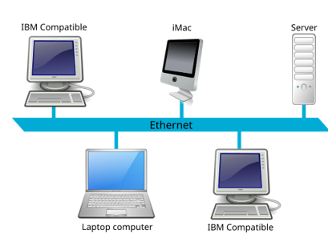
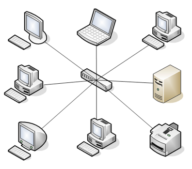
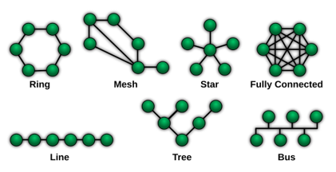

06. Telecommunications and Computer Networks
Info
- Rahida Asadli, Ismayil Shahaliyev
- Nov 23 2025 / Dec 21 2025
Telecommunications
Telecommunications is the long-distance transmission of information using electronic or electromagnetic signals. Whenever two devices exchange information (a voice call, a video stream, a bank transaction), telecommunications is operating in the background. Telecommunications makes communication possible without physical proximity. A phone call between countries, a campus network connecting buildings, or a satellite sending weather data to Earth are all telecommunications in action.
Every telecommunication system follows the same basic structure: sender → channel (medium) → receiver. The sender is where information originates. The channel is the path between sender and receiver, such as copper cable, fiber-optic cable, or wireless radio waves. The receiver converts the incoming signal back into a usable form. For communication to work, both sides follow shared rules called protocols, which define how data is formatted, transmitted, and interpreted.
Glossary
Before starting, it helps to know core terms that appear frequently in telecommunications and networks.
Attenuation is the weakening of a signal as it travels through a medium. The longer the distance, the weaker the signal becomes. Copper cables usually attenuate faster than fiber. When attenuation becomes too high, the receiver may get a distorted or unreadable signal, which is why long links may require repeaters or amplifiers.
Electromagnetic interference (EMI) is the disturbance caused by external electrical or magnetic sources. Power lines, motors, and electronic devices can disrupt electrical signals in copper cables. Fiber uses light, so it is not affected by EMI.
Bandwidth is the maximum amount of data that a medium or network can carry per second. It is capacity, not “speed of electricity.” Bandwidth is usually measured in Mbps or Gbps.
Note
A 100 Mbps connection can carry more data per second than a 10 Mbps connection, so large files download faster. Twisted-pair cables support lower bandwidth over short distances compared to coaxial, and fiber typically supports much higher bandwidth over much longer distances.
Throughput is the actual amount of data successfully delivered per second. Throughput is usually lower than bandwidth because of interference, distance, congestion, and hardware limits.
Note
A Wi-Fi link may have a 300 Mbps bandwidth rating, but real throughput might be 80 Mbps due to walls, competing networks, and device limitations. Complaints about “slow internet” are usually complaints about throughput.
Signal type refers to the physical form of transmitted data. Twisted-pair and coaxial carry electrical signals. Fiber carries optical signals (light). This is a major reason fiber performs better over distance and resists interference, but it is typically more expensive and harder to install.
| Property | Twisted pair | Coaxial cable | Fiber-optic cable |
|---|---|---|---|
| Cost | Low | Medium (≈2–3× twisted pair) | High |
| Installation | Easy | Easy | Difficult |
| Attenuation | High | Moderate | Very low |
| Signal type | Electrical | Electrical | Optical (light) |
| Bandwidth | ~1–100 Mbps | Hundreds of Mbps to Gbps | Gbps to Tbps |
| Distance | ~100 m | ~100 m | Kilometers |
| EMI effect | High | Low | None |
Latency is the time it takes for data to travel from one point to another. Even with high bandwidth, high latency can make communication feel slow. Local networks usually have low latency. Long-distance communication often has higher latency.
Exercise. Determine the bandwidth and throughput of your device’s current connection.
Direction
Communication systems can be classified by how data flows between sender and receiver.
Simplex is one-way communication. The receiver cannot respond over the same channel. Television broadcasting is a classic example.
Half-duplex is two-way communication, but not at the same time. Devices take turns sending and receiving. Walkie-talkies are a typical example.
Full-duplex is simultaneous two-way communication. Phone calls and modern network links are full-duplex, enabling smooth interaction.
Time
Communication systems can also be classified by timing.
Synchronous communication requires both endpoints to be active at the same time and exchange data immediately. It is used when results must be immediate, such as live calls, real-time control, or interactive request-response systems.
Asynchronous communication removes time coupling. The sender does not block waiting for the receiver. Messages may be buffered, queued, or stored and processed later. This improves scalability and fault tolerance and is used heavily in modern systems (email delivery, job queues, background processing, batch workflows).
Range
Distance shapes the technologies and infrastructure used.
Personal Area Network (PAN) covers a few meters around a person, connecting devices such as phones, smartwatches, and earbuds.
Local Area Network (LAN) covers a home, office, building, or campus network segment. LANs use Ethernet, Wi-Fi, switches, and routers.
Note
A home network is a LAN: the router connects phones, laptops, and TVs and provides shared access to the internet. A university lab network is also a LAN.
Metropolitan Area Network (MAN) spans a larger area, typically a city or a large multi-building campus.
Wide Area Network (WAN) covers very large areas such as countries or continents. WANs rely on backbone networks, long-haul fiber, satellites, and high-capacity routers.
Note
The Internet is the most significant WAN. International banking and airline reservation systems also run over WAN-scale connectivity.
Computer Networks
A computer network is a collection of devices connected so they can exchange data. Devices communicate by sending information over cables or wireless signals. To do this, networks rely on hardware, addressing, and agreed rules.
Glossary
MAC (Media Access Control) address is a hardware-based identifier for a network interface, typically shown as 12 hexadecimal digits such as 00:1A:2B:3C:4D:5E. It identifies devices within a local network segment.
IP (Internet Protocol) address is a logical address used for communication across networks. Unlike MAC addresses, IP addresses can change depending on the network.
Hub connects multiple devices but does not direct traffic intelligently. It repeats incoming data to all ports, creating unnecessary traffic.
Switch forwards data intelligently inside a local network. It learns MAC addresses and sends frames only to the intended device.
Router connects different networks and forwards packets based on IP addresses. A home router connects a LAN to the ISP and then to the Internet.
Modem connects a local network to the ISP’s physical infrastructure. It converts digital data into a signal suitable for the medium and converts incoming signals back into digital data. Many home devices combine modem + router + switch, but these are logically different roles.
Frame is the data unit used inside a local network (switching). Frames carry MAC addresses.
Packet is the data unit used across networks (routing). Packets carry IP addresses.
Packet switching breaks data into packets and routes them independently. This allows many users to share the same links efficiently, supports alternative routes when failures occur, and retransmits only lost packets instead of entire messages.
Port is a logical endpoint used by applications to separate different types of communication on the same device. For example, web traffic commonly uses port 80 (HTTP) or 443 (HTTPS).
Exercise. Determine the IP and MAC addresses of your device.
Network Topologies
Network topology describes the physical or logical arrangement of devices and connections. The topology affects reliability, performance, cost, and how failures spread.
Bus Topology
All devices share a single main cable. If the main cable fails, the entire network fails. As more devices communicate, collisions and congestion increase.
Note
Early office networks used one coaxial cable as a shared backbone. Damage to that cable could stop all communication.

Star Topology
All devices connect to a central device (usually a switch). If one cable fails, only that device is affected. If the central device fails, the whole network stops.
Note
Modern home and office networks usually follow star topology: devices connect to a central router or switch.

Ring Topology
Devices form a loop. Data travels around the ring until it reaches the destination. A single break can disrupt the loop unless rerouting exists.
Note
Some older campus and metropolitan networks used ring designs to connect buildings in a loop.
Mesh Topology
Devices connect through multiple redundant paths. If one link fails, traffic can reroute through others. This is reliable but expensive and complex.
Note
Internet backbone providers use mesh-style redundancy so failures do not interrupt global connectivity.

| Topology | Advantages | Disadvantages |
|---|---|---|
| Bus | Simple and cheap for small networks; less cable | Backbone failure stops everything; performance drops as devices increase; hard to troubleshoot |
| Star | Easy to manage; single device failure usually isolated; easy to add/remove devices; strong performance | Central switch/router failure stops the network; more cable required |
| Ring | Predictable data flow; no collisions in token-based rings; equal access | One failure can disrupt the loop; harder to reconfigure |
| Mesh | High reliability; multiple paths; strong fault tolerance | Expensive; complex installation and maintenance |
| Line | Simple linear structure; easy to extend at ends | Middle failure breaks downstream communication; limited scalability |
| Tree | Easy to expand; common in large networks | Backbone failure affects branches; more cable; more complex configuration |